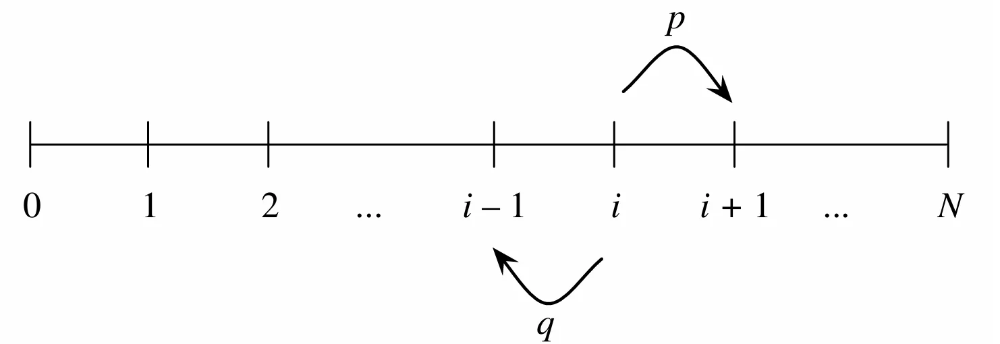

Conditional Probability
Conditional Probabilities
\(P(A|B)\)被称为在\(B\)发生的条件下\(A\)发生的条件概率.要在\(B\)发生的条件下让\(A\)也发生,实际结果必须同时包含在\(A\)和\(B\)中,即属于\(AB\).同时,既然已经知道\(B\)发生了,那些\(B\)未发生的结果就不再可能出现了,因此\(B\)就成了新的样本空间. 根据上面的描述便可以得到条件概率的定义
如果\(P(B)>0\),那么 $$ P(A|B)=\frac{P(A\cap B)}{P(B)} $$
注意
- 需要特别注意那个事件在竖线的前面,即\(P(A|B)\ne P(B|A)\).
- \(P(A|B)\)和\(P(B|A)\)都有意义
- \(P(A)\)被称为先验概率(prior),\(P(A|B)\)被称为后验概率(posterior)
将上面的定义稍加变形得到 $$ P(A\cap B)=P(A|B)P(B)=P(A)P(B|A) \tag{1.1} $$ 这个公式在计算事件交集的概率时十分有用.
可以将公式(1.1)推广到\(n\)个事件 $$ P(E_1E_2\cdots E_n)=P(E_1)P(E_2|E_1)P(E_3|E_1E_2)\cdots P(E_n|E_1E_2\cdots E_{n-1})\tag{1.2} $$ 这个公式被称为乘法规则(multiplication rule).
证明
对等式的右边使用条件概率的定义得到 $$ P(E_1)\cdot\frac{P(E_1E_2)}{P(E_1)}\cdot\frac{P(E_1E_2E_3)}{P(E_1E_2)}\cdots\frac{P(E_1E_2\cdots E_n)}{P(E_1E_2\cdots E_{n-1})}=P(E_1E_2\cdots E_n) $$
我们可以改变公式(1.2)中事件\(A_i\)的顺序,从而得到\(n!\)不同的乘法规则.
例如,对于三个事件\(A_1,A_2,A_3\),我们有
$$
P(A_1\cap A_2\cap A_3)=P(A_1)P(A_2|A_1)P(A_3|A_1, A_2)=P(A_2)P(A_1|A_2)P(A_3|A_1, A_2)
$$
通常需要根据事件的顺序,选择一个\(A_i\)作为第一个事件,从而得到一个乘法规则.
Bayes' Rule and the Law of Total Probability
根据公式(1.1)可以得到著名的贝叶斯公式(Bayes' rule) $$ P(A|B)=\frac{P(B|A)P(A)}{P(B)} $$ 另一种定义贝叶斯公式的方法是使用发生比(odds)
发生比
一个事件的发生比为 $$ \text{odds}(A)=\frac{P(A)}{P(A^c)} $$ 当然,也可以使用发生比来表示事件的概率,即 $$ P(A)=\frac{\text{odds}(A)}{1+\text{odds}(A)} $$
因此,贝叶斯公式也可以表示为 $$ \frac{P(A|B)}{P(A^c|B)}=\frac{P(B|A)}{P(B|A^c)}\frac{P(A)}{P(A^c)} $$
\(\dfrac{P(B|A)}{P(B|A^c)}\) 在统计学中被称为似然比(likelihood ratio)
全概率公式(law of total probabilitiy, LOTP)将条件概率和非条件概率关联起来,将一个事件分解为多个小事件 令\(A_1,\cdots,A_n\)是样本空间\(S\)的一个划分1,并且\(P(A_i)>0\),那么 $$ P(B)=\sum_{i=1}^nP(B|A_i)P(A_i) $$
证明
因为\(A_i\)是\(S\)的一个划分,所以 $$ \begin{aligned} B&=B\cap S\ &=B\cap(A_1\cup A_2\cup\cdots\cup A_n)\ &=(B\cap A_1)\cup(B\cap A_2)\cup\cdots\cup(B\cap A_n) \end{aligned} $$ 因为\(A_1,\cdots,A_n\)构成样本空间的一个划分,所以 \(B\cap A_1,\cdots,B\cap A_n\) 是两两互斥的事件.根据概率公理得到: $$ P(B)=P(B\cap A_1)+P(B\cap A_2)+\cdots+P(B\cap A_n) $$ 再对每一项应用乘法规则 \(P(B\cap A_i)=P(B|A_i)P(A_i)\),即可得到: $$ P(B)=P(B|A_1)P(A_1)+P(B|A_2)P(A_2)+\cdots+P(B|A_n)P(A_n) $$
根据全概率公式,可以将样本空间分为不相交的集合\(A_i\),找到\(B\)在每个集合中的条件概率,然后计算出他们的加权和.
Conditional Probabilities Are Probabilities
条件概率也是一个概率,因此满足概率的所有性质
- 条件概率在0到1之间
- \(P(S|E)=1, P(\varnothing|E)=0\)
- \(A_1,A_2,\cdots,A_n\),\(P(\bigcup_{j=1}^{\infty}A_j|E)=\sum_{j=1}^{\infty}P(A_j|E)\)
- \(P(A^c|E)=1-P(A|E)\)
同时,非条件概率也可以看作满足特定条件的条件概率
条件概率是概率,并且所有概率都是有条件的
除此之外,贝叶斯公式和全概率公式也可以附加更多的条件
带额外条件的贝叶斯公式 $$ P(A|B, E)=\frac{P(B|A, E)P(A|E)}{P(B|E)} $$
带额外条件的全概率公式 $$ P(B|E)=\sum_{i=1}^nP(B|A_i, E)P(A_i|E) $$
Independence of Events
如果事件\(A\)和\(B\)满足 $$ P(A\cap B)=P(A)P(B) $$ 那么事件\(A\)和事件\(B\)是独立事件(independent)
如果\(P(A)>0\)且\(P(B)>0\),上述定义可以等价为\(P(A|B)=P(A)\)或\(P(B|A)=P(B)\)
独立是一个对称关系,即如果事件\(A\)与事件\(B\)独立,那么事件\(B\)与事件\(A\)独立
互斥是指 \(A \cap B = \varnothing\).如果 \(P(A)>0, P(B)>0\)，那么互斥事件绝不独立因为已知 \(A\) 发生,则\(B\) 必不发生.
如果\(A\)与\(B\)独立,那么\(A\)与\(B^c\)独立,\(A^c\)与\(B\)独立,\(A^c\)与\(B^c\)独立
如果事件\(A,B,C\)满足 $$ \begin{aligned} P(A\cap B)&=P(A)P(B)\\ P(A\cap C)&=P(A)P(C)\\ P(B\cap C)&=P(B)P(C)\\ P(A\cap B\cap C)&=P(A)P(B)P(C) \end{aligned} $$ 那么事件\(A,B,C\)是独立的.如果只满足前三个,那么事件\(A,B,C\)是成对独立(pairwise independence).
注意
- 成对独立并不意味着相互独立
- 仅满足 \(P(A \cap B \cap C) = P(A)P(B)P(C)\) 也推不出成对独立.
如果事件\(A\)和\(B\)满足 $$ P(A\cap B|E)=P(A|E)P(B|E) $$ 那么事件\(A\)和事件\(B\)是条件独立(conditionally independent)
独立事件与条件独立没有必然联系,两个独立事件可以不是条件独立;两个条件独立事件可以不是独立事件.即不能从\(P(AB)=P(A)P(B)\)得到\(P(A\cap B|E)=P(A|E)P(B|E)\).
Coherency of Bayes' Rule
贝叶斯公式满足一个重要的性质:连贯性(coherency),即当我们获得到多条信息并希望整合这些信息来更新概率时，无论是逐条依次更新概率,还是最后同时结合所有信息更新概率,最终得到的后验概率完全相同.
Conditioning as a Problem-solving Tool
下面是两种解决概率问题的常用策略:
Strategy:Condition on what you wish you knew
如果知道某个未知状态/中间变量\(E\)从而能轻松解题，就对 \(E\) 和 \(E^c\) 进行条件分解
Strategy: condition on the first step
适用于多阶段/递归结构的问题,通过对第一步可能出现的结果进行条件分解,建立关于目标概率的递归方程.
下面是一个使用第二个策略的例子:
Gambler's ruin
两个赌徒A和B,进行一系列1$的打赌,其中A获胜的概率是 \(p\),B获胜的概率是\(q=1-p\).假设A初始有\(i\)美元,B初始有 \(N-i\)美元.每次A损失一美元,这一美元就到了B手里,反之亦然.因此,两个人之间的总财富保持不变(即\(N\)).整个过程如下图所示

求A获胜的概率
设\(p_i\)为A从\(i\)美元开始最终获胜的概率,事件\(W\)为A获胜
根据全概率公式可以计算出第一回合\(p_i\)的值 $$ \begin{aligned} P_i&=P(W|\text{A start at i, wins round 1})p+P(W|\text{A start at i, loses round 1})q \\ &=P(W|\text{A start at i + 1})p + P(W|\text{A start at i - 1})q \\ &= p_{i+1}\cdot p+p_{i-1}\cdot q \end{aligned} $$
上面的递推公式的特征方程为\(px^2-x+q=0\),解得方程的两个根为\(1\)和\(q/p\),当\(p\ne 1/2\)时,这两个根不同,可以得到 递推公式的通解为 $$ p_i=a+b\left(\frac{q}{p}\right)^i\tag{1.3} $$
通过边界条件\(p_0=0\)和\(p_N=1\)得到 $$ a=-b=\frac{1}{1-(\frac{q}{p})^N} $$
将\(a,b\)带入\((1.3)\)即可得到结果.
当\(q=1/2\)时,方程有两个相同的根,此时,通解为 $$ p_i=a+bi $$
通过边界条件\(p_0=0\)和\(p_N=1\)得到 $$ a=0\qquad b=\frac 1N $$
综上,可以得到 $$ p_i= \begin{cases} \dfrac{1-\left(\dfrac{q}{p}\right)^i}{1-\left(\dfrac{q}{p}\right)^N},&p\ne1/2 \\ \dfrac{i}{N},&p=1/2 \end{cases} $$
一些补充
-
上面这个式子是连续的.因为 $$ \begin{aligned} \lim_{p\to\frac12}\frac{1-\left(\frac{q}{p}\right)^i}{1-\left(\frac{q}{p}\right)^N}& \xlongequal {\text{let }x=q/p} \lim_{x\to1}\frac{1-x^i}{1-x^N} \\ &\xlongequal{\text{L'Hôpital}} \lim_{x\to1}\frac{ix^{i-1}}{Nx^{N-1}} \\ &=\frac iN \end{aligned} $$
-
根据对称性,只需要交换p和q即可得到B获胜的概率为 $$ P(\text{B wins}) = \begin{cases} \dfrac{1-\left(\dfrac{p}{q}\right)^{N-i}}{1-\left(\dfrac{p}{q}\right)^N}, & p \neq 1/2 \ \dfrac{N-i}{N}, & p = 1/2 \end{cases} $$
因为\(P(B wins)+p_i=1\),所以这个游戏必将结束.
Pitfalls and Paradoxes
常见的概率谬误
Prosecutor's fallacy: 混淆了\(P(A|B)\)和\(P(B|A)\)
Defense attorney's fallacy: 没有将所有的证据作为条件
Simpson's paradox
当数据按某个混杂变量分组拆分时，各组内部均表现出某种趋势,但在总体数据聚合后,该趋势却完全反转 例如 事件\(A,B,C\)满足 $$ P(A|B,C) < P(A|B^c,C) \text{且} P(A|B,C^c) < P(A|B^c,C^c) $$ 但最终 \(P(A|B) > P(A|B^c)\)
Simpson悖论的本质是因为全概率公式中各组的加权权重存在巨大差异.
-
即\(\bigcup\limits_{i=1}^n A_i = S\) ↩